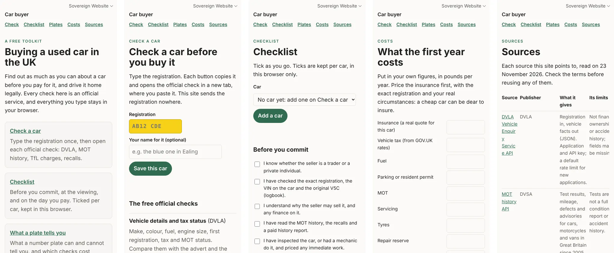

Synthetic users: Car Buyer, round 1
Site: https://car-buyer.tool.sovereignweb.site/ at fc3266d (v0.1.1), Dinis Cruz's own free toolkit for buying a used car in the UK. Run: 23 November 2026, about 16:25 UTC, by design.b.rounds, asked by design.b. Would you use this before buying a car? 4 of 5 (one with reservations). Look 3.4 (4, 4, 3, 3, 3). Nobody said "wow". The review.
Method: Synthetic users. One agent played five personas across the six pages (home, /check/, /checklist/, /plate/, /costs/, /sources/), from captures of the phone (light and dark) and the desktop, with nothing typed. These are simulations, and never replace the measured checks or a real person.
| Persona | Use it? | Look | Most useful | Least useful | In their words |
|---|---|---|---|---|---|
| First-time buyer, about 20, £3,000 car, private seller | yes | 4 | Checklist | Sources | "it told me things I didn't know, like 'tax does not pass with the car' ... But it tells me to read 'a paid history report' and never says roughly what one costs." |
| Parent helping a teenager | yes | 4 | Home ("The one thing to remember") | Plates | "'The one thing to remember' on the home page is exactly the speech I'd give ... The costs sheet is just blank boxes, though." |
| Londoner, worried about ULEZ | yes | 3 | Check | Sources | "'Use TfL's answer, not a guess from the car's age' is the right advice ... the sheet says 'Put in your own figures, in pounds per year' and then asks me for days." |
| Low-vision reader on a phone | yes, with reservations | 3 | Check | Sources | "much of the body text is mid-grey on cream ... Sources is the worst: the table runs off the right edge." |
| Sceptical friend who knows the trade | no | 3 | Plates | Costs | "it's a tidy list of links to gov.uk services I already have bookmarked, and it stops exactly where the real risk starts." |
Agreed by three or more
- Good: the advice is accurate, plain, and sends you to the official source rather than guessing (four personas). The order works: type the registration once, then before you commit, at the viewing, on the day you pay (three).
- Bad: the Costs page is blank boxes with no guidance (three). Sources is jargon-heavy (API, OAuth), leaves out TfL, and is awkward on a phone (three). The site stops where a buyer most needs help: what a paid history check costs, what a private sale protects, how to pay safely (three).
